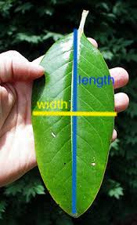

Appex 07
STA 112 - Fall 2022
Part 1
We are going to collect some data! We are trying to estimate the average length and width of magnolia leaves. To do this, you are each going to measure 30 leaves on trees in the Mag Quad. We will use this data in class on Thursday.
Measurment collection
- We are measuring leaf length (from stem to tip of the leaf, in green below) and width (the widest part of the leaf, in yellow below).

- To do this, you can use an app on your phone.
- For iPhone users, an app called “Measure” is automatically on your phone (if you don’t see it search “Measure” in your search bar)
- For Android users, you can install this app called “Ruler” (or something similar)
- Go to bit.ly/magnolia-data, this will take you to a Google Spreadsheet. Make a copy of this sheet by clicking
File > Make a Copy - Measure 30 leaves and enter the data in this spreadsheet (don’t pull the leaves off the trees please! Either measure ones on the ground or measure them while still on the tree 😄 )
- Submit your data here: bit.ly/magnolia-data-form
Part 2
- Go to lucy.shinyapps.io/least-squares/
- This shows a scatter plot of 10 data points with a line estimating the relationship between
xandy. Drag the blue points to change the line. - See if you can find a line that minimizes the sum of square errors
Part 3
- Create a new project from this template in RStudio Pro:
https://github.com/sta-112-f22/appex-07.git- Load the packages and data by running the top chunk of R code
- Learn about the
PorschePricedata by running?PorschePricein your Console - Fit a linear model predicting
PricefromMileage - Add a variable called
y_hatto thePorschePricedataset with the predicted y values - Add a variable called
residualto thePorschePricedataset with the residuals